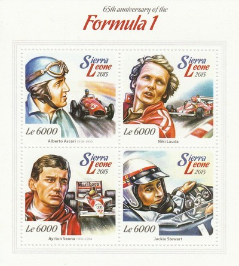
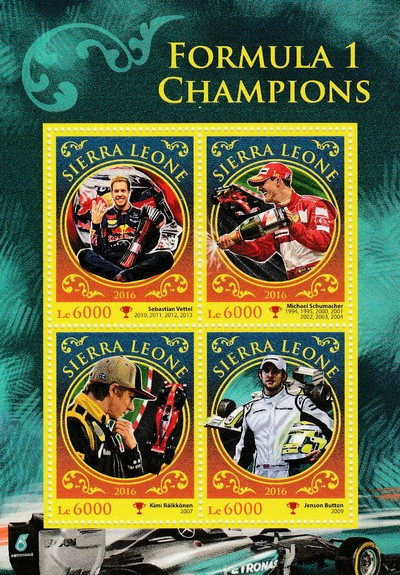
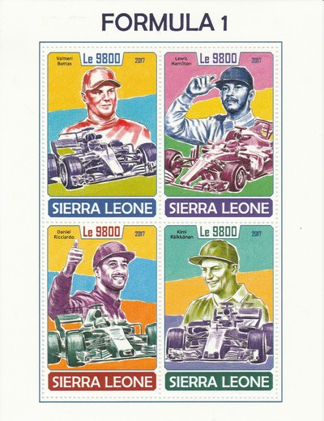
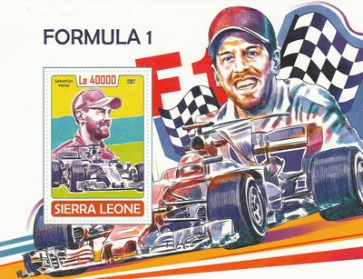
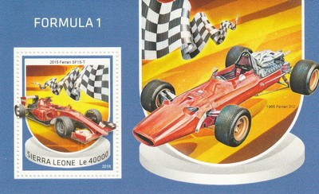
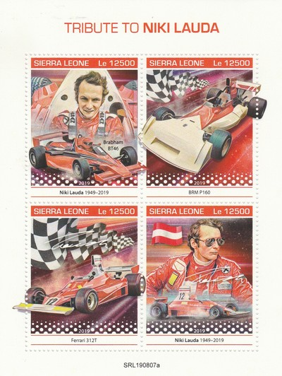
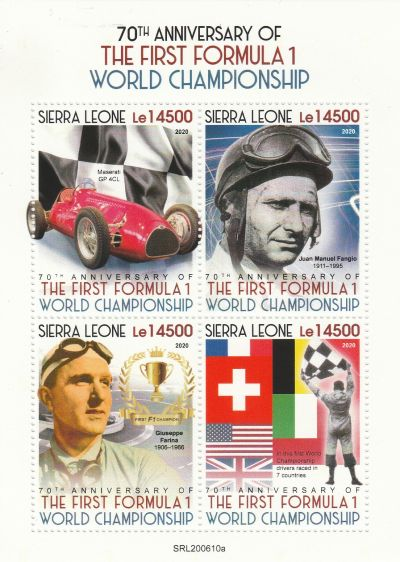

Republic of Sierra Leone
 |
 Issue date: 2009 A sheet of 4 values, showing the following Ferrari F1 cars: 1977 312 T2 - driven by Niki Lauda, Carlos Reutemann and Gilles Villeneuve (who took over from Lauda for the last two races after he left Ferrari, despite winning the drivers title) the 312 T2 provided Ferrari with the constructors title 1982 126 C2 - driven by Gilles Villeneuve, Patrick Tambay, Didier Pironi and Mario Andretti, Ferrari took the constructors title with the 126 C2 1983 126 C3 - Ferrari again took the constructors championship with the 126 C3, driven by Patrick Tambay and Rene Arnoux 2007 F2007 - driven by Felipe Massa and Kimi Raikkonen, Ferrari won the constructors championship with the F2007  Issue date: 2015 A mini sheet commemorating the 65th anniversary of F1. The sheet features the following drivers: - Alberto Ascari - Niki Lauda - Ayrton Senna - Jackie Stewart In 1950, the championship was won by Giuseppe "Nino" Farina driving for the Alfa Romeo team. In 2014, the championship was won by Lewis Hamilton driving for the Mercedes team.  Issue date: 2015 A mini sheet commemorating the 65th anniversary of F1. In 1950, the championship was won by Giuseppe "Nino" Farina driving for the Alfa Romeo team. In 2014, the championship was won by Lewis Hamilton driving for the Mercedes team.  Issue date: 29th September 2016 A mini sheet featuring various F1 Driver Champions: - Sebastian Vettel (2010, 2011, 2012, 2013) - Michael Schumacher (1994, 1995, 2000, 2001, 2002, 2003, 2004) - Kimi Raikkonen (2007) - Jenson Button (2009)  Issue date: 29th September 2016 A mini sheet of one value featuring Lewis Hamilton - World Champion 2008 (McLaren), 2014 (Mercedes), 2015 (Mercedes).  Issue date: 30th October 2017 A mini sheet of four values featuring: - Valterri Bottas - Lewis Hamilton - Daniel Ricciardo - Kimi Raikkonen  Issue date: 30th October 2017 A mini sheet featuring Sebastian Vettel. Vettel started his F1 as a test driver for BMW Sauber and made his debut with the team at the 2007 USA Grand Prix replacing the injured Robert Kubica. Later that season he joined Toro Rosso. Vettel was quickly promoted to the Red Bull team in 2009 and finished that season as the youngest-ever World Drivers' Championship runner-up. The following year he went on to become the youngest driver ever to win the World Drivers' Championship, aged 23. This was then followed immediately with the same accolade for a double, triple and quadruple World Drivers' Champion. Ending a long-term association with Red Bull, Vettel activated a clause to end his contract with Red Bull after the 2014 season and moved to Ferrari.  Issue date: 30th August 2018 A min sheet of one value featuring the following Ferrari F1 cars: - Ferrari SF15-T (2015) - driven by Sebastian Vettel and Kimi Raikkonen, Ferrari were runners up in the Constructors' Championship - Ferrari 312 - this car was raced by Ferrari from 1966 to 1969, it was the car designed in response to "the return to power" (the change in regulations allowing for 3 litre engines)  Issue date: 30th August 2018 A mini sheet of four values featuring the following F1 cars: - Ferrari 312 (1966 - 1969) - Ferrari 312 T (1975 - 1976) - Mercedes-Benz W196 (1954 - 1955)  Issue date: 30th August 2019 A mini sheet of one value issued as a tribute to Niki Lauda who died on 20th May 2019. The following cars are depicted: - McLaren MP4/1 (1983) - Ferrari 312 T (1975, 1976)  Issue date: 30th August 2019 A mini sheet of four values issued as a tribute to Niki Lauda who died on 20th May 2019. The following cars are depicted: - Brabham BT46 (1978) - BRM P160 (1973) - Ferrari 312 T (1975, 1976)  Issue date: 31st August 2020 TBD  Issue date: 31st August 2020 TBD |